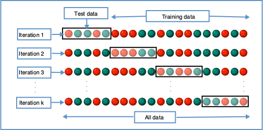

Disease Course Sequencing with the EBM¶
Event-Based Model of disease progression¶
Author: Neil Oxtoby, UCL
Objectives:¶
This notebook walks you through how to fit an event-based model of disease progression using publicly available software and simulated data.
The steps involved:
Load input data
e.g., a CSV table of disease features (biomarkers) in a cohort including patients and healthy controls
Prepare the input data: select a subset of features; perform some basic statistical checks; etc.
Fit the model
Perform cross-validation
We add additional steps as didactic exemplars of good practice in data-driven disease progression modelling.
The set-up¶
This notebook is currently designed to run in a specially prepared conda environment, using the KDE EBM package (see installation instructions on GitHub).
In the future we may support running this in the cloud.
# Import some packages
import numpy as np
import matplotlib.pyplot as plt
plt.rcParams.update({'font.size': 18}) # default fontsize
Simulate some data¶
N = 4 # number of events/features
J = 100 # number of patients
noise_scale = 0.1
dp = np.linspace(0, 20, J)
def sigmoid(t,a=1,b=-10):
return 1/(1 + np.exp(-a*(t-b)))
gradients = np.array([1,1,1,1])
onsets = np.array([4,8,12,16])
X = np.empty(shape=(J,N))
fig,ax = plt.subplots(figsize=(10,5))
for a,b,k in zip(gradients,onsets,range(len(gradients))):
# print('a = %i, b = %i' % (a,b))
x = sigmoid(t=dp,a=a,b=b)
#print(x)
ax.plot(dp, x)
y = x + np.random.normal(0, noise_scale, x.size)
X[:,k] = y
ax.plot(dp, y,'.')
ax.set_xlabel("Disease Progression Time",fontsize=20)
ax.set_ylabel("sigmoid(t)",fontsize=20)
Text(0, 0.5, 'sigmoid(t)')
#* Sample some controls
X_controls = np.empty(shape=X.shape)
for k in range(len(gradients)):
X_controls[:,k] = np.random.normal(0, 0.05, (X_controls.shape[0],))
Didactic step: Look at the data¶
Visual: look at the histograms of patients and controls
Statistical tests: use null hypothesis statistical tests of “differences” to select features
Loosely speaking, a significant difference suggests presence of “disease signal” (patient measurements are “different” to controls measurements) in a biomarker
#* 1. Histograms
fig,ax = plt.subplots(N,1,figsize=(8,14))
for k in range(N):
ax[k].hist([ X[:,k],X_controls[:,k]],label=['Patients','Controls'])
ax[k].set_title('Biomarker %i' % (k+1),fontsize=16)
ax[0].legend()
fig.tight_layout()
Basic statistical tests¶
Effect size: (difference in medians) / (“width” of controls distribution)
Mann-Whitney U test (quoting Wikipedia):
a nonparametric test of the null hypothesis that, for randomly selected values X and Y from two populations, the probability of X being greater than Y is equal to the probability of Y being greater than X.
#* 2. Basic statistics
# I use a nonparametric test because it works regardless of the data distributions
# (some tests assume some level of Gaussianity)
from scipy import stats
print('Mann Whitney U test')
for k in range(N):
x_c = X_controls[:,k]
x_p = X[:,k]
effect_size = np.absolute(np.median(x_p)-np.median(x_c))/stats.median_abs_deviation(x_c)
u,p = stats.mannwhitneyu(x_c,x_p)
print('Biomarker %i\n - effect size = %.3g\n - u = %i, p = %.2g' % (k+1,effect_size,u,p))
Mann Whitney U test
Biomarker 1
- effect size = 25.6
- u = 563, p = 1.1e-27
Biomarker 2
- effect size = 21.4
- u = 1774, p = 1.6e-15
Biomarker 3
- effect size = 6.45
- u = 2026, p = 1.9e-13
Biomarker 4
- effect size = 2.79
- u = 2422, p = 1.5e-10
Prepare data for fitting¶
Data matrix X has M individuals (patients, controls, prodromal/at-risk individuals) and N biomarkers/events
#* Setup data for fitting
y = np.ones(shape=(X.shape[0],1))
y_controls = np.zeros(shape=(X_controls.shape[0],1))
X_patients_controls = np.concatenate((X,X_controls),axis=0)
y_patients_controls = np.concatenate((y,y_controls),axis=0)
X = X_patients_controls
y = y_patients_controls.flatten().astype(int)
Fit mixture models¶
This step maps biomarker values x (columns of data matrix X) to p(event), allowing for patients to be at different stages of cumulative abnormality.
Typical group-level analyses simply compare measurements from patients with controls, e.g., looking for statistical “differences” in the mean values. The mixture model allows for patients to have both abnormal observations that deviate from controls (these are early disease events), and normal observations (these will be later disease events)
from kde_ebm.mixture_model import fit_all_kde_models, fit_all_gmm_models, get_prob_mat
from kde_ebm.plotting import mixture_model_grid, mcmc_uncert_mat, mcmc_trace, stage_histogram
from kde_ebm.mcmc import mcmc, parallel_bootstrap, bootstrap_ebm, bootstrap_ebm_fixedMM, bootstrap_ebm_return_mixtures
#* Label the biomarkers/events
e = ['Early','Early-ish','Late-ish','Late']
e_labels = e
#* Direction of progression (1 = biomarker increases in patients; -1 = biomarker decreases in patients)
# This is a feature of the KDE EBM software.
e_disease_direction_dict = {'Early':1,'Early-ish':1,'Late-ish':1,'Late':1}
e_disease_direction = [e_disease_direction_dict[f] for f in e]
kde_mixtures = fit_all_kde_models(
X, y,
implement_fixed_controls = True,
patholog_dirn_array = e_disease_direction
)
#* View the mixture models
mixture_model_grid(
X,y,
kde_mixtures,
score_names=e,
class_names=['Controls','Patients']
)
(<Figure size 720x720 with 4 Axes>,
array([[<AxesSubplot:title={'center':'Early'}>,
<AxesSubplot:title={'center':'Early-ish'}>],
[<AxesSubplot:title={'center':'Late-ish'}>,
<AxesSubplot:title={'center':'Late'}>]], dtype=object))
Sequencing using MCMC: Markov Chain Monte Carlo¶
This is a standard method for approximating a model posterior when exact inference is intractable.
Here we are performing maximum likelihood inference. The EBM posterior is intractable in general because evaluating the likelihood function requires calculating the likelihood of all N! possible sequences for N biomarkers.
This quickly explodes for N > 6, so we generate random samples from the posterior (the full set of possible sequences) using MCMC, and keep only those sequences that increase the likelihood (ideally towards the maximum).
In general, the posterior won’t be a convex function, i.e., one having a single easy-to-find maximum.
In practice, the posterior could consist of multiple maxima at different locations in parameter space. To avoid getting “stuck” in a local maximum, we follow good machine learning practice when searching parameter space to sample from the posterior: multiple random initialisations of the sampling, greedy initialisation, and MCMC sampling.
Details of the bespoke MCMC algorithm used here are in the original EBM paper: Fonteijn et al., NeuroImage (2012).
#* MCMC sequencing
mcmc_samples = mcmc(X, kde_mixtures)
#* Maximum Likelihood sequence over all samples
seq_ml = mcmc_samples[0].ordering
# print('ML sequence: {0}'.format(seq_ml))
print('ML order : %s' % ', '.join([e_labels[k] for k in seq_ml]))
/Users/noxtoby/Documents/code/github/kde_ebm/kde_ebm/mcmc/mcmc.py:34: UserWarning: Matplotlib is currently using module://ipykernel.pylab.backend_inline, which is a non-GUI backend, so cannot show the figure.
fig.show()
ML order : Early, Early-ish, Late-ish, Late
# View the ML posterior
f,a = mcmc_uncert_mat(mcmc_samples, ml_order=None, score_names=e_labels)
A prettier solution¶
I define some convenience functions, then use them to plot
import itertools
def extract_pvd(ml_order,samples):
if type(ml_order) is list:
#* List of PVDs from cross-validation/bootstrapping
n_ = len(ml_order[0])
pvd = np.zeros((n_,n_))
#all_orders = np.array(ml_order)
if type(samples[0]) is list:
#* 10-fold CV returns MCMC samples for each fold separately in a list - concatenate them here
all_samples = list(itertools.chain.from_iterable(samples))
else:
#* Bootstrapping returns MCMC samples pre-concatenated
all_samples = samples
all_orders = np.array([x.ordering for x in all_samples])
for i in range(n_):
pvd[i, :] = np.sum(all_orders == ml_order[0][i], axis=0)
#pvd_cv, cv_rank = reorder_PVD_average_ranking(PVD=pvd)
pvd, rank = reorder_PVD(pvd)
seq = [ml_order[0][i] for i in rank]
else:
#* Single PVD (ML results)
n_ = len(ml_order)
pvd = np.zeros((n_,n_))
samples_ = np.array([x.ordering for x in samples])
seq = ml_order
for i in range(n_):
pvd[i, :] = np.sum(samples_ == seq[i], axis=0)
return pvd, seq
def reorder_PVD(PVD,mean_bool=False,edf_threshold=0.5):
"""
Reorders a PVD by scoring the frequencies in each row, then ranking in increasing order.
Score: integral of complementary empirical distribution (1-EDF) up to a threshold.
Rationale: the sooner the EDF gets to the threshold, the earlier it should be in the ranking.
"""
if mean_bool:
n_ = PVD.shape[0]
ranking = np.linspace(1,n_,n_) # weights
weights = PVD
mean_rank = []
for i in range(n_):
mean_rank.append( sum( weights[i,:] * ranking ) / sum(weights[i,:]) )
new_order = np.argsort(mean_rank)
else:
#* Find where the empirical distribution first exceeds the threshold
edf = np.cumsum(PVD,axis=1)
edf = edf / np.tile(np.max(edf,axis=1).reshape(-1,1),(1,edf.shape[1]))
edf_above_threshold = []
for k in range(edf.shape[0]):
edf_above_threshold.append(np.where(edf[k,:]>=edf_threshold)[0][0])
#* Ties implicitly split by original ordering in the PVD (likely the ML ordering)
edf_rank = np.argsort(edf_above_threshold)
new_order = edf_rank
PVD_new = PVD[new_order,:]
# PVD_new = np.zeros((n_,n_))
# for i in range(n_):
# PVD_new[i, :] = PVD[new_order[i],:]
return PVD_new, new_order
# Frontiers default is pdf with 300dpi
# And run it all through imagemagick after to convert
def save_plot(fig, fname, fig_format="png", dpi=150, **kwargs):
fig.savefig(
f"{fname}.{fig_format}",
dpi=300,
bbox_inches="tight",
**kwargs
)
# Get labels
nom = 'tute'
#* Plot EBM (PVD)
pvd_ml, seq_ml = extract_pvd(ml_order=seq_ml,samples=mcmc_samples)
reorder_ml = np.argsort(seq_ml)
pvd_ml_ = pvd_ml[:][reorder_ml]
fig, ax = plt.subplots(1,1,figsize=(9, 6),sharey=False)
labels = e_labels
labels_ = [labels[i].replace('TOTAL','').replace('TOT','').replace('-detrended','') for i in seq_ml]
ax.imshow(pvd_ml_[:][seq_ml], interpolation='nearest', cmap='Reds')
n_biomarkers = pvd_ml.shape[0]
stp = 1
fs = 14
tick_marks_x = np.arange(0,n_biomarkers,stp)
x_labs = range(1, n_biomarkers+1,stp)
ax.set_xticks(tick_marks_x)
ax.set_xticklabels(x_labs, rotation=0,fontsize=fs)
tick_marks_y = np.arange(n_biomarkers)
ax.set_yticks(tick_marks_y+0.0)
ax.tick_params(axis='y',color='w')
labels_trimmed = [x[2:].replace('_', ' ') if x.startswith('p_') else x.replace('_', ' ') for x in labels_]
ax.set_yticklabels(labels_trimmed,#,np.array(labels_trimmed, dtype='object')[seq_],
rotation=0, #ha='right',
rotation_mode='anchor',
fontsize=18)
# ax.set_ylabel('Instrument', fontsize=28)
ax.set_xlabel('Positional Variance', fontsize=24)
ax.grid(False)
save_plot(fig, nom+"-PVD_ML")

Patient staging utility¶
Concept: align individuals to the model
Method (see Young et al, Brain 2014): compare data from each individual (patients/controls/at-risk) with the model and calculate a p(event) vector, then assign the most likely stage according to the accumulation of disease events
#* Define the EBM staging function
def ebm_staging(x,mixtures,samples):
"""
Given a trained EBM (mixture_models,mcmc_samples), and correctly-formatted data, stage the data
NOTE: To use CV-EBMs, you'll need to call this for each fold, then combine.
Author: Neil P Oxtoby, UCL, September 2018
"""
if type(mixtures[0]) is list:
#* List of mixture models from cross-validation / bootstrapping
n_cv = len(mixtures)
prob_mat = []
stages = []
stage_likelihoods = []
stages_expected = []
for k in range(n_cv):
#* Stage the data
prob_mat.append(get_prob_mat(x, mixtures[k]))
stages_k, stage_likelihoods_k = samples[k][0].stage_data(prob_mat[k])
stages.append(stages_k)
stage_likelihoods.append(stage_likelihoods_k)
#* Average (expectation value) stage
stages_expected_k = np.ndarray(shape=stages_k.shape)
for kk in range(stages_expected_k.shape[0]):
stages_expected_k[kk] = np.sum(stage_likelihoods_k[kk,:]*np.arange(1,stage_likelihoods_k.shape[1]+1,1))/np.sum(stage_likelihoods_k[kk,:]) - 1
stages_expected.append(stages_expected_k)
else:
#* Stage the data
prob_mat = get_prob_mat(x, mixtures)
if type(samples[0]) is list:
n_bs = len(samples)
stages = []
stage_likelihoods = []
stages_expected = []
for k in range(n_bs):
#* Stage the data
stages_k, stage_likelihoods_k = samples[k][0].stage_data(prob_mat)
stages.append(stages_k)
stage_likelihoods.append(stage_likelihoods_k)
#* Average (expectation value) stage
stages_expected_k = np.ndarray(shape=stages_k.shape)
for kk in range(stages_expected_k.shape[0]):
stages_expected_k[kk] = np.sum(stage_likelihoods_k[kk,:]*np.arange(1,stage_likelihoods_k.shape[1]+1,1))/np.sum(stage_likelihoods_k[kk,:]) - 1
stages_expected.append(stages_expected_k)
else:
stages, stage_likelihoods = samples[0].stage_data(prob_mat)
#* Average (expectation value) stage
stages_expected = np.ndarray(shape=stages.shape)
for k in range(stages_expected.shape[0]):
stages_expected[k] = np.sum(stage_likelihoods[k,:]*np.arange(1,stage_likelihoods.shape[1]+1,1))/np.sum(stage_likelihoods[k,:]) - 1
# #* Average (expectation value) stage
# stages_expected_n = np.sum(stage_likelihoods,axis=1)
# stages_expected_ = np.average(stage_likelihoods_long_ml,axis=1,weights=np.arange(1,stage_likelihoods_long_ml.shape[1]+1,1))
# stages_expected_ = stages_expected_/stages_expected_n
return prob_mat, stages, stage_likelihoods, stages_expected
#* Staging
# df_staging = df_EBM.copy()
# staging_columns = ['RID','VISCODE',dx_column,'Years_bl']+e
# df_staging = df_staging[staging_columns].copy()
# x_long = df_staging[e].values
# df_staging['Fraction missing data'] = np.sum(np.isnan(x_long),axis=1)/x_long.shape[1]
# stage_column = "Model stage"
#* Maximum-likelihood model stage
prob_mat_ml, stages_long_ml, stage_likelihoods_long_ml, stages_long_ml_expected = ebm_staging(
x=X,
mixtures=kde_mixtures,
samples=mcmc_samples
)
stages_long = stages_long_ml
Plot a staging histogram¶
Number of individuals in each EBM stage
fig, ax = plt.subplots(figsize=(8,6))
ax.hist([ stages_long[y==0], stages_long[y==1]],bins=np.arange(-0.5,N+1.5,1))
# #* Seaborn version: requires creating a Pandas DataFrame and adding data/etc.
# ax = sns.histplot(
# data = df_staging,
# x = stage_column,
# hue = "Status",
# ax = ax
# discrete = True,
# multiple = "dodge",
# log_scale = (False, True),
# palette = status_palette,
# )
ax.set_ylabel('Number of individuals',fontsize=20)
ax.legend(['Controls','Patients'],fontsize=20)
<matplotlib.legend.Legend at 0x7ff098927690>
#* Plot the original data, coloured by stage
fig,ax = plt.subplots(figsize=(12,6))
for k in range(N):
plt.scatter(dp,X[y==1,k],c=stages_long[y==1],cmap='viridis',label='')
plt.plot
# ax.legend(['Stage %i' % k for k in range(N)],loc='center right',bbox_to_anchor=[1.5,0.5])
<function matplotlib.pyplot.plot(*args, scalex=True, scaley=True, data=None, **kwargs)>
(Work In Progress) Bonus: Cross-validation¶
Generalizability/robustness of a model can be quantified by testing the model on independent data, i.e., data not included when training the model.
Cross-validation does this by splitting the available data into train/test sets.
k-fold cross-validation¶
Splitting a dataset into k “folds” enables calculation of model performance statistics (e.g., mean, standard deviation) over k test sets, using the other k-1 folds to train the model each time.
It is common to use k=10, which amounts to using 90% of your data to train and 10% to test.
This process can be repeated multiple times using different random partitions (splits) into folds.

By Gufosowa - Own work, CC BY-SA 4.0, https://commons.wikimedia.org/w/index.php?curid=82298768
# markers_all_detrended = [e+'-detrended' for e in event_markers_adcs]
# # df_staging = pd.read_csv("adcs_ebm-prepped-staging.csv")
# # x = df_staging[markers_all_detrended].values
# # y = df_staging["DX"].values.astype(int)
# #* RCV1: Repeated, stratified 5-fold CV - round 1 (ML stage is ground truth for test folds)
# k_folds = 5
# n_repeats = 10
# from sklearn.model_selection import RepeatedStratifiedKFold
# repeated_cvfolds = RepeatedStratifiedKFold(n_splits=k_folds, n_repeats=n_repeats) #, random_state=36851234)
# if "mixtures_rcv" in ebm_results:
# kde_mixtures_rcv = ebm_results["mixtures_rcv"]
# mcmc_samples_rcv = ebm_results["mcmc_samples_rcv"]
# seqs_rcv = ebm_results["sequences_rcv"]
# staging_errors_rcv = ebm_results["staging_errors_rcv"]
# else:
# kde_mixtures_rcv, mcmc_samples_rcv, seqs_rcv, staging_errors_rcv = ebm_ute.ebm_2_repeatedcv(
# x=x,
# y=y,
# events=markers_all_detrended,
# rcv_folds=repeated_cvfolds,
# implement_fixed_controls=True,
# patholog_dirn_array=event_markers_adcs_disease_direction,
# model_stage=df_staging["Model stage"].values
# )
# #* Save
# ebm_results["mixtures_rcv"] = kde_mixtures_rcv
# ebm_results["mcmc_samples_rcv"] = mcmc_samples_rcv
# ebm_results["sequences_rcv"] = seqs_rcv
# ebm_results["staging_errors_rcv"] = staging_errors_rcv
# pickle_file = open(pickle_path,'wb')
# pickle_output = pickle.dump(ebm_results, pickle_file)
# pickle_file.close()
# #* Plot EBM (PVD)
# pvd_rcv, seq_rcv = ebm_ute.extract_pvd(ml_order=seqs_rcv,samples=mcmc_samples_rcv)
# reorder_rcv = np.argsort(seq_rcv)
# pvd_rcv_ = pvd_rcv[:][reorder_rcv]
# fig, ax = plt.subplots(1,1,figsize=(9, 6),sharey=False)
# labels = ebm_scores_labels
# labels_ = [labels[i].replace('TOTAL','').replace('TOT','').replace('-detrended','') for i in seq_rcv]
# ax.imshow(pvd_rcv_[:][seq_rcv], interpolation='nearest', cmap='Oranges')
# # ax.set_title('Cross-Validation',fontsize=24)
# n_biomarkers = pvd_rcv.shape[0]
# stp = 1
# fs = 14
# tick_marks_x = np.arange(0,n_biomarkers,stp)
# x_labs = range(1, n_biomarkers+1,stp)
# ax.set_xticks(tick_marks_x)
# ax.set_xticklabels(x_labs, rotation=0,fontsize=fs)
# tick_marks_y = np.arange(n_biomarkers)
# ax.set_yticks(tick_marks_y+0)
# ax.tick_params(axis='y',color='w')
# labels_trimmed = [x[2:].replace('_', ' ') if x.startswith('p_') else x.replace('_', ' ') for x in labels_]
# ax.set_yticklabels(labels_trimmed,#,np.array(labels_trimmed, dtype='object')[seq_],
# rotation=0, #ha='right',
# rotation_mode='anchor',
# fontsize=18)
# # ax.set_ylabel('Instrument', fontsize=28)
# ax.set_xlabel('Sequence', fontsize=22)